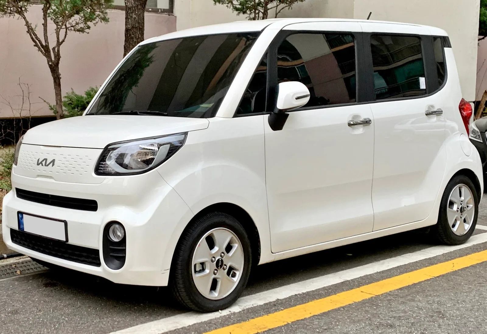
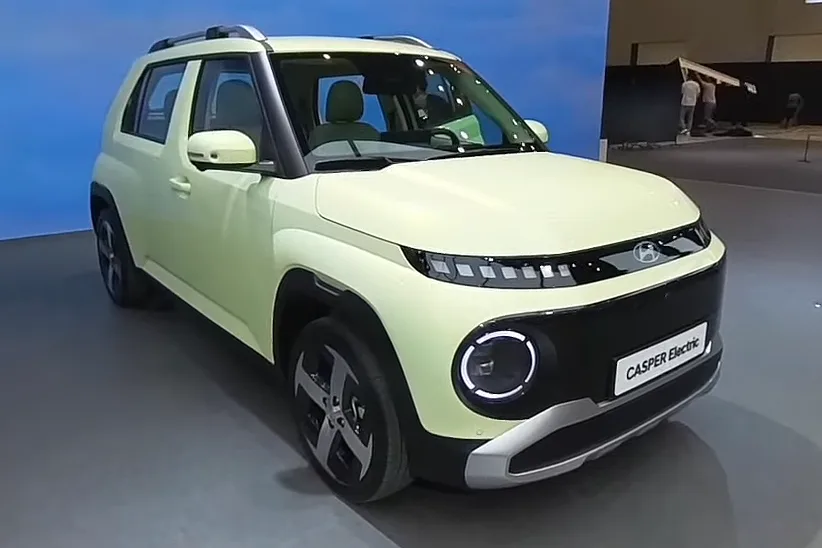
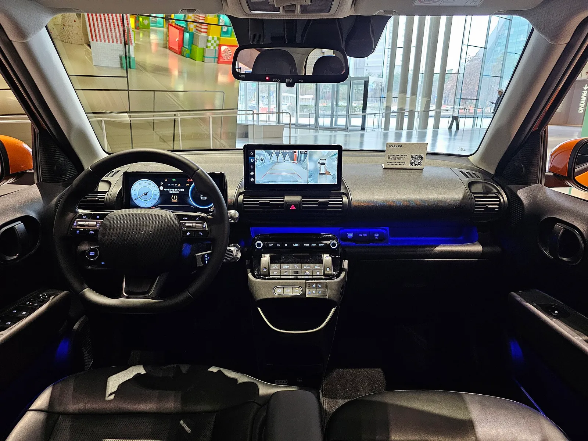
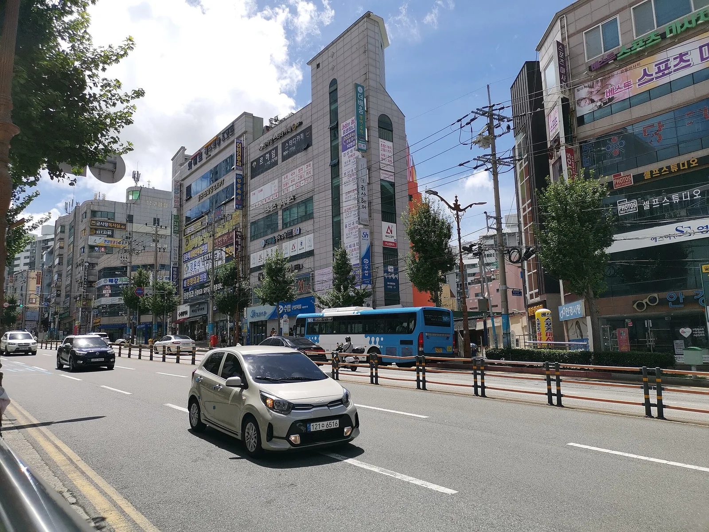
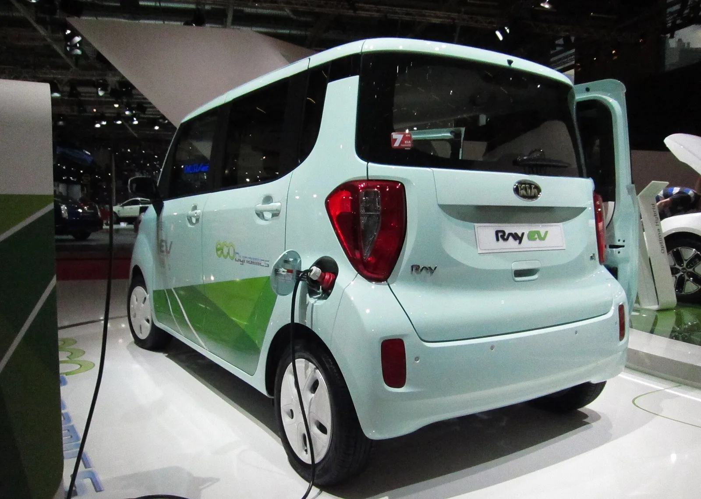
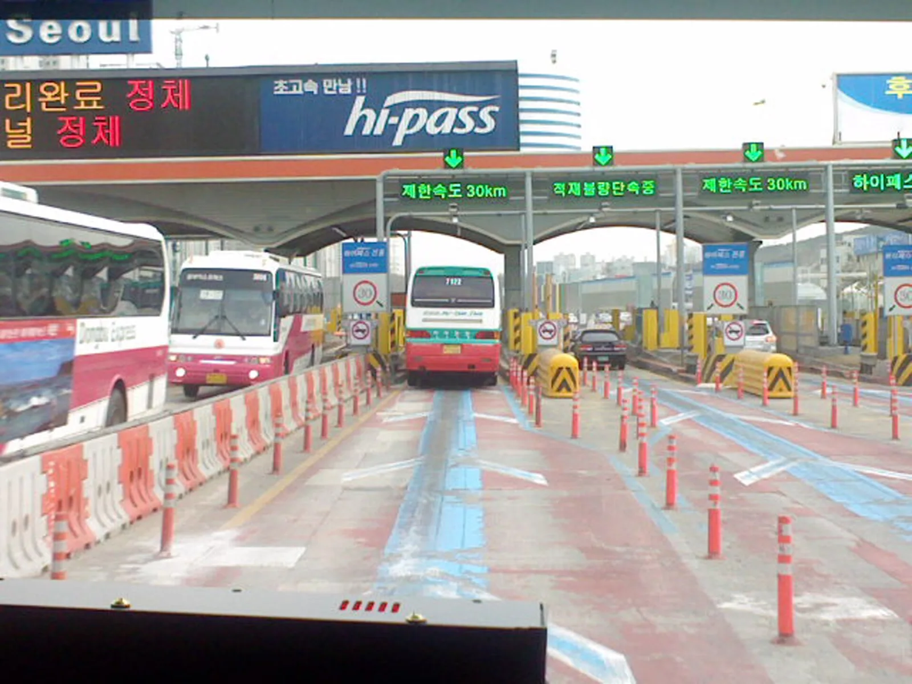
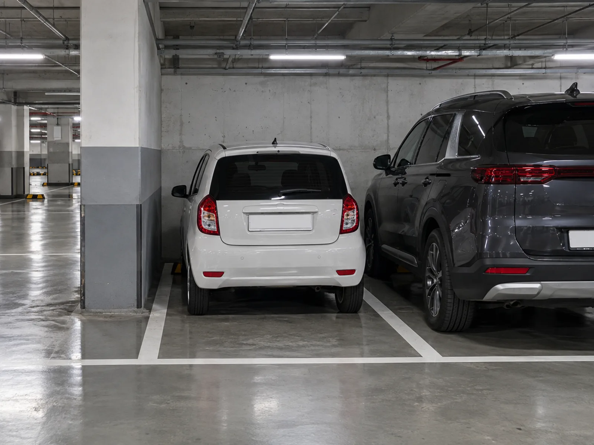
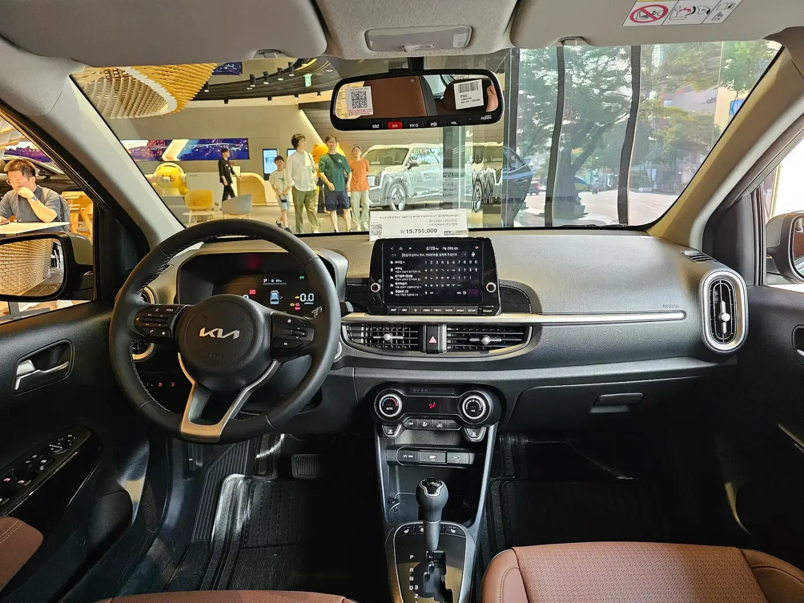
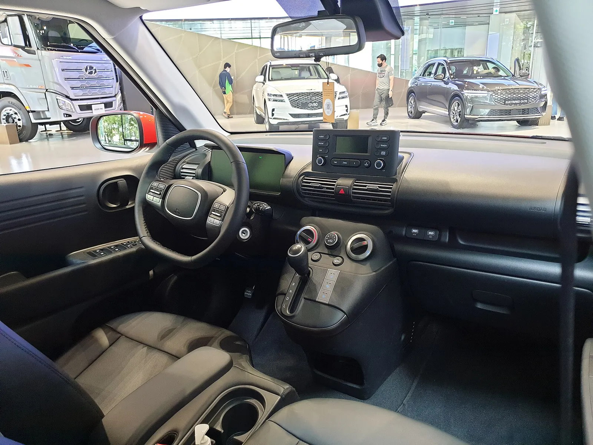

▲ 가솔린 캐스퍼는 경형 규격이지만 캐스퍼 일렉트릭은 아니다 ⓒ Benespit / Wikimedia Commons (CC BY-SA 4.0)
"경차는 세금 혜택이 많다는데, 5년이면 정확히 얼마지?" 취득세 면제, 통행료 50%, 공영주차장 50%, 유류세 환급은 따로따로 설명한 글이 많지만 한 대 값으로 합산한 표는 드물다. 이 글은 법령·공공 안내로 확인한 조건을 모아 "경차를 샀을 때 vs 같은 가격의 일반 승용차(비경차)를 샀을 때" 5년 차이를 직접 계산했다. 계산 가정은 각 표 아래에 적었고, 확인하지 못한 항목은 "확인하지 못함"으로 남겼다.
개별 제도는 이미 다룬 기사가 있다. 이 글은 그 숫자를 한 장의 합계표로 묶는 데 집중한다: 취득세·개소세 기사, 공영주차장 감면 기사, 유류세 인하 연장 기사, 고속도로 통행료 할인 기사.
1. 경차의 법적 기준 — 레이는 되고 캐스퍼 일렉트릭은 안 된다
세금·통행료·주차 혜택은 모두 "경형자동차" 기준을 쓴다. 생활법령정보(법제처)는 경형자동차를 아래처럼 안내한다. 같은 안내에서 개별소비세 과세 대상 제외도 함께 확인된다.
| 구분 | 배기량·출력 | 길이 | 너비 | 높이 |
|---|---|---|---|---|
| 경형(일반) | 1,000cc 미만 | 3.6m 이하 | 1.6m 이하 | 2.0m 이하 |
| 경형(초소형) | 250cc 이하(정격출력 15kW 이하) | 3.6m 이하 | 1.5m 이하 | 2.0m 이하 |
| 경형 전기차 | 최고출력 80kW 미만 | 3.6m 이하 | 1.6m 이하 | 2.0m 이하 |

▲ 기아 레이는 차체가 높지만 전장 3,595mm·전폭 1,595mm로 경형 규격 안에 있다 ⓒ Benespit / Wikimedia Commons (CC BY-SA 4.0)
기준 중 많은 운전자가 놓치는 것이 길이·너비다. 배기량이 1,000cc 미만이어도 치수가 넘으면 경차가 아니다. 전기차는 배기량이 없으므로 출력 80kW 미만과 치수 조건으로 본다.
| 차종 | 전장×전폭 | 출력 | 판정 |
|---|---|---|---|
| 기아 레이(가솔린) | 3,595×1,595mm | 1,000cc 미만 | 경형 |
| 기아 레이 EV | 레이와 동일 차체 | 87.4마력 ≒ 64.3kW(1마력=0.7355kW 환산) | 치수·출력 기준 충족(실제 등록 구분은 등록증 확인) |
| 현대 캐스퍼(가솔린) | 3,595×1,595mm | 1,000cc 미만 | 경형 |
| 현대 캐스퍼 일렉트릭 | 3,825×1,610mm(트림별 전장 3,825~3,845mm) | 트림별로 96.7PS(약 71kW)~114.9PS(약 84.5kW), 자동차 정보 사이트 카눈 기준(현대차 공식 제원은 직접 열람하지 못함) | 경형 아님(길이 225mm·너비 10mm 초과. 최저 트림은 출력이 80kW 미만이어서 판정 근거는 출력이 아니라 치수) |

▲ 캐스퍼 일렉트릭. 가솔린 캐스퍼보다 전장을 230mm 늘려 경형 기준(3.6m)을 넘는다 ⓒ jasonryudotnet / Wikimedia Commons (CC BY 3.0)

▲ 캐스퍼 일렉트릭의 실내(전시차). 파일명 기준 인스퍼레이션 트림이며 정확한 연식·사양은 확정하지 않는다. 실내 크기와 별개로 법적 경차 여부는 외부 치수로 갈린다 ⓒ Damian B Oh / Wikimedia Commons (CC BY-SA 4.0)
⚠️ "경차답다"와 "법적 경차"는 다르다
캐스퍼 일렉트릭이 배터리 때문에 가솔린 캐스퍼보다 전장을 230mm 키운 점은 2024년 6월 30일자 더에디트 보도에서 확인된다. 국내에서 "경형 전기 SUV"로 소개되는 경우도 있지만 법적 기준은 치수다. 카프리즘의 기존 기사 일부는 이 차를 "경차"로 부르는데, 혜택 계산에서는 일반 전기 승용차로 보고 별도 처리한다. 사려는 차의 경형 여부는 차량등록증의 차종(경형)으로 직접 확인하는 것이 가장 정확하다.

▲ 경차 시장의 한 축인 기아 모닝(해외명 피칸토). 도심 주행에 맞춘 소형차다 ⓒ Nord794ub / Wikimedia Commons (CC BY-SA 4.0)
2. 취득세 — 75만 원 면제와 "한도를 넘는 가격"
지방세특례제한법 제67조에 따라 비영업용 승용 경차는 취득세액 75만 원 이하이면 전액 면제, 초과하면 75만 원을 공제한다(생활법령정보 안내). 경차 취득세율은 4%이므로 부가세 제외 차량가액 1,875만 원(75만 ÷ 0.04)까지는 전부 면제다. 부가세 10%를 얹은 판매가로는 약 2,062.5만 원이다.
| 판매가(부가세 포함) | 부가세 제외 | 4% 산출세액 | 감면 후 납부 | 같은 가격 일반 승용(7%) |
|---|---|---|---|---|
| 1,490만 원(레이 트렌디 시작가) | 13,545,455원 | 541,818원 | 0원(전액 면제) | 948,182원 |
| 2,003만 원(레이 X-라인) | 18,209,091원 | 728,364원 | 0원 | 1,274,636원 |
| 2,228만 원(캐스퍼 가솔린 풀옵션 상단) | 20,254,545원 | 810,182원 | 60,182원(75만 원 공제) | 1,417,818원 |
수식은 납부세액 = max(0, 판매가÷1.1×4% − 750,000원)이다. 일반 비영업용 승용차 취득세율 7%와 비교하면 같은 1,490만 원짜리에서 약 95만 원 차이가 난다. 레이 가격은 카프리즘 레이 리뷰 기사, 캐스퍼 가격은 2026년형 캐스퍼 가격 기사 기준이다.
| 항목 | 내용 | 근거 |
|---|---|---|
| 감면 한도 | 세액 75만 원(초과분 75만 원 공제) | 생활법령정보 |
| 일몰 | 2027년 12월 31일 | 생활법령정보·국회 소위 통과 보도 |
| 2024년 개정 경과 | 정부안은 "내년(2025년)부터 40만 원만 감면"하는 축소안이었으나 국회에서 75만 원 유지(상한 75만 원, 2027.12.31까지)로 변경, 행안위 소위 통과(2024.12.19) | 퍼블릭뉴스 2024.12.23 원문에서 40만 원 정부안과 75만 원 연장 문구를 직접 확인(본회의 최종 통과는 직접 확인하지 못함, 일몰 2027년은 생활법령 안내로 확인) |
| 채권 | 경형자동차는 도시철도채권 매입 의무 면제 | 생활법령정보(금액 환산은 매입 할인율이 수시로 변해 계산하지 못함) |
| 추징 요건 | 매각·용도 변경 시 감면 추징 여부 | 확인하지 못함 |

▲ 충전 중인 레이 EV(초기 세대로 보이는 전시차, 현행 2026년형과 외관이 다르다). 전기 경차는 경차 감면과 전기차 감면 중 하나를 고르는 구조로 알려져 있다 ⓒ Rutger van der Maar / Wikimedia Commons (CC BY 2.0)
전기 경차(레이 EV)는 경차 감면 75만 원과 전기차 감면(140만 원 한도, 기아 안내 기준 2026년까지, 2027년부터 100만 원 한도) 중 큰 쪽을 쓰는 구조라고 2차 자료는 설명하지만, 중복 적용 조문은 직접 확인하지 못했다. 실제 신청은 지자체 차량등록 담당에 확인하는 것이 안전하다. 취득세 전체 구조는 자동차 취득세 기사를 참고하면 된다.
3. 개별소비세·교육세 — "안 내는 세금"은 가격에 이미 들어 있다
경형자동차는 개별소비세 과세 대상에서 제외된다(생활법령정보). 일반 승용차에 붙는 5%(2026년 7월 1일부터 정상세율 복귀)와 그 30%인 교육세가 없다. 부가가치세 10%는 경차에도 그대로 붙는다.
| 단계 | 수식 | 금액 |
|---|---|---|
| 공장도가격 X | 15,000,000 ÷ (1.1 × (1 + 0.05 × 1.3)) = 15,000,000 ÷ 1.1715 | 약 12,804,097원 |
| 개별소비세 5% | X × 5% | 약 640,205원 |
| 교육세 30% | 개소세 × 30% | 약 192,061원 |
| 합계 | 개소세 + 교육세 | 약 83.2만 원 |
📍 왜 합계에 넣지 않았나
경차의 개소세 비과세 효과는 이미 판매가에 반영되어 있다. 같은 1,500만 원 가격표를 단 일반 승용차를 상상하면 개소세만큼 공장도가격이 더 낮은 차가 되어 직접 비교가 성립하지 않는다. 그래서 위 83만 원은 "경차 가격에 들어 있는 혜택의 크기"를 보이는 참고값으로만 쓴다. 개소세 인하·친환경차 감면 구조는 개소세 기사에서 정리했다.
4. 자동차세 — cc당 80원 vs 140원
비영업용 승용차 자동차세는 배기량별로 1,000cc 이하 cc당 80원, 1,600cc 이하 140원, 1,600cc 초과 200원이며 지방교육세(자동차세의 30%)가 더해진다(생활법령정보). 998cc 경차와 1,598cc 소형차를 비교하면 아래와 같다.
| 구분 | 수식 | 자동차세 | 지방교육세(30%) | 합계(연) |
|---|---|---|---|---|
| 998cc 경차 | 998 × 80원 | 79,840원 | 23,952원 | 103,792원 |
| 1,598cc 일반 승용(비교용) | 1,598 × 140원 | 223,720원 | 67,116원 | 290,836원 |
| 차이 | 290,836 − 103,792 | 187,044원/년 → 5년 935,220원 | ||
| 전기 승용(참고) | 정액 | 130,000원(기아 안내) | 가산 여부 확인하지 못함 | 경형 전기차 별도 단가 확인하지 못함 |
1월 연납(공제 5%, 체감 약 4.57%)을 쓰면 경차 기준으로 연 약 4,700원이 더 줄어든다. 연납 구조는 자동차세 연납 기사에서 다뤘다. 차령 감액(3년차부터 매년 5%씩)은 경차와 비교 차량 모두에 걸리므로 차이 금액이 비례해 조금 줄어든다.
5. 고속도로 통행료 50% — 하이패스와 전기 경차의 변수
서울고속도로 안내에 따르면 경형자동차(승용·승합·화물·특수)는 고속도로 통행료의 50%를 할인받는다. 2008년 1월 1일부터 기준이 800cc 미만에서 1,000cc 미만으로 넓어졌다는 정책브리핑 기사도 확인된다. 정책브리핑 원문(2008년 기사)에서도 대상 기준이 "배기량 1000cc 미만, 길이 3.6m 이하, 너비 1.6m 이하, 높이 2.0m 이하"이고 하이패스 장착 차량은 차량 단말기(OBU) 정보 변경이 필요한 경우가 있다고 확인된다. 한국도로공사 감면 안내 페이지는 이번에도 접속 오류로 직접 열람하지 못했다. 하이패스 필요 여부는 2차 자료에서만 확인했다("별도 신청 없이 차량 정보로 자동 인식, 단 하이패스 단말기 전제").

▲ 하이패스 차로가 있는 서울 톨게이트. 경차 감면은 하이패스 단말기 장착을 전제로 안내되는 경우가 많다 ⓒ P.Cps1120a / Wikimedia Commons (CC BY-SA 3.0)
| 시나리오 | 연 통행료(1종 정가) | 경차 부담(50%) | 연 절감 | 5년 절감 |
|---|---|---|---|---|
| A 가벼운 시내형 | 100,000원 | 50,000원 | 50,000원 | 250,000원 |
| B 보통 | 300,000원 | 150,000원 | 150,000원 | 750,000원 |
| C 장거리 출퇴근 | 800,000원 | 400,000원 | 400,000원 | 2,000,000원 |
전기 경차의 변수: 전기·수소차 통행료 감면율은 2025년 40%, 2026년 30%, 2027년 20%로 줄어든다(한국경제 2026.1.6 보도). 레이 EV처럼 경차이면서 전기차인 경우 50%와 30% 중 큰 쪽(50%)만 적용된다는 설명이 2차 자료에 있으나 정책브리핑 원문 두 건을 다시 열어봤지만 중복 감면 문구를 찾지 못했고 한국도로공사 원문은 열람하지 못했다. 반대로 경형이 아닌 캐스퍼 일렉트릭은 전기차 감면(2026년 30%, 2027년 20% 예정)만 받는다. 감면 구조 전반은 통행료 할인 기사를 함께 보면 된다.
6. 공영주차장·공항·혼잡통행료 — 지자체 조례가 갈린다
법제처 법령 검색 요약 기준 주차장법령은 경형자동차·환경친화적 자동차의 주차요금을 50% 이상 감면하도록 하고, 구체 요율은 조례로 정한다. 서울시설공단은 경차·저공해차 50%, 인천공항은 경차·저공해 1·2종 50%, 감면 사유가 겹치면 하나만 적용하는 방식이다(카프리즘 공영주차장 감면 기사에서 공식 안내와 대조).

▲ 경차 감면은 공영주차장 요금에서 체감되지만 민간 주차장은 적용 여부가 제각각이다(설명용 AI 생성 예시 이미지) ⓒ CarPrism (AI 생성 이미지)
▲ 고속도로 휴게소 주차장(2017년 촬영). 경차 전용 구획만 따로 찍은 공개 사진은 Commons에서 찾지 못해 일반 주차장 사진으로 대신한다. 이 사진 속 구획이 경차 전용인지는 확인할 수 없다 ⓒ Jhcbs1019 / Wikimedia Commons (CC BY-SA 4.0)
| 시나리오 | 연 주차요금(정가) | 연 절감 | 5년 절감 |
|---|---|---|---|
| A | 100,000원 | 50,000원 | 250,000원 |
| B | 300,000원 | 150,000원 | 750,000원 |
| C | 600,000원 | 300,000원 | 1,500,000원 |
✅ 확인하지 못한 항목
· 혼잡통행료(남산터널): 서울시 안내에서 저공해차 면제는 확인했지만 경차 감면 여부는 확인하지 못함
· 자동차보험 경차 할인: 보험개발원·금융감독원 공식 자료에서 확인하지 못함(보험사 상품별 차이 가능)
· 두 항목은 5년 합계에 넣지 않았다
7. 유류세 환급 — 연 30만 원, 그리고 일몰 2026년 12월 31일
경형자동차 유류세 환급은 조세특례제한법 제111조의2에 근거한다. 생활법령정보 기준 휘발유·경유는 리터당 250원, 부탄(LPG)은 부과된 개별소비세 전액을 환급하고 연 한도는 30만 원이다. 소유자와 주민등록상 동거가족의 승용차(또는 승합차) 합계가 1대여야 하며, 롯데·신한·현대카드 중 한 곳의 유류구매카드로 결제하면 카드사가 주유 시점에 환급분을 차감하고 청구한다. 다른 사람이 쓰게 하거나 다른 차에 쓰면 환급세액의 40% 가산세가 붙는다.
생활법령정보 경형자동차 유류세 환급 바로가기▲ 경차 환급은 유류구매카드로 결제해야 주유 시점에 차감된다(설명용 AI 생성 예시 이미지) ⓒ CarPrism (AI 생성 이미지)
| 시나리오 | 연 주행거리 | 연 연료 | 산출 환급 | 적용 환급(한도 반영) |
|---|---|---|---|---|
| A | 8,000km | 약 571L | 142,857원 | 142,857원 |
| B | 12,000km | 약 857L | 214,286원 | 214,286원 |
| C | 20,000km | 약 1,429L | 357,143원 | 300,000원(한도) |
한도 30만 원이 소진되는 연료량은 300,000 ÷ 250 = 1,200L, 14km/L 기준 약 16,800km다. 그 이상은 환급이 늘지 않는다. 유류세 인하 연장과는 별개 제도이며 인하 효과는 유류세 인하 연장 기사에서 계산했다.
⏳ 일몰과 연장 법안
환급 특례의 일몰은 2026년 12월 31일이다. 에너지데일리(2026.10.3)는 엄태영 의원 등 12명이 2026년 9월 7일 조세특례제한법 개정안(의안번호 2221125)을 발의해 일몰을 2029년 12월 31일로 3년 연장하려 한다고 보도했다(발의일·의원·공동발의 12명·의안번호는 에너지데일리 원문에서 재확인, 국회 의안정보시스템 원문은 열람하지 못함). 이는 발의 단계이며 통과가 확정된 것이 아니다. 그래서 5년 합계에서는 "연장됨"과 "일몰 후 중단" 두 경우를 모두 계산했다. 전기 경차는 유류를 사지 않으므로 이 환급 대상이 아니다(전기 충전에 대한 환급 규정은 확인하지 못함, 추정).
8. 경차 한 대 5년 혜택 합계표
앞의 계산을 합쳤다. 비교 대상은 "같은 가격(1,500만 원)·같은 용도의 비영업용 일반 승용(1,598cc, 취득세 7%)"이다. 합계 수식은 취득세 차이 954,545원(일회) + 자동차세 차이 187,044원×5 + (통행료 연 절감 + 주차 연 절감)×5 + 연 환급×환급 적용 연수이다. 환급 적용 연수는 연장 시 3.25년(2026년 4분기 0.25년+2027~2029년)이고, 2029년 이후까지 재연장되어 5년 내내 받는다면 합계는 약 310만·446만·689만 원(A·B·C)으로 올라간다.
| 항목 | A 가벼운 시내형 | B 보통 | C 장거리 출퇴근 |
|---|---|---|---|
| ① 취득세(7% 대비 면제, 일회) | 954,545 | 954,545 | 954,545 |
| ② 자동차세(5년) | 935,220 | 935,220 | 935,220 |
| ③ 통행료 50%(5년) | 250,000 | 750,000 | 2,000,000 |
| ④ 공영주차 50%(5년) | 250,000 | 750,000 | 1,500,000 |
| ⑤ 유류세 환급(3.25년분, 2029년 말 연장 가정) | 464,285 | 696,430 | 975,000 |
| 합계(환급 2029년 말까지 연장 시) | 2,854,050 (약 285만 원) | 4,086,195 (약 409만 원) | 6,364,765 (약 636만 원) |
| 합계(환급 일몰, ⑤ 제외) | 2,389,765 (약 239만 원) | 3,389,765 (약 339만 원) | 5,389,765 (약 539만 원) |
▲ 혜택 합계는 모두 "같은 가격의 일반 승용차 대비" 가정치다. 내 주행거리·통행료·주차 지출을 같은 식에 넣어 다시 계산해 본다(설명용 AI 생성 예시 이미지) ⓒ CarPrism (AI 생성 이미지)
✅ 이 표를 읽을 때 유의할 점
1. 같은 1,500만 원이면 일반 승용차는 개소세가 빠진 만큼 더 작은 차 값이라, 위 합계를 "경차가 더 싸다"는 결론으로 읽으면 안 된다(실내 공간·안전·옵션 차이는 계산 밖).
2. 통행료·주차는 지출 규모에 비례한다. 장거리·도심 이용이 적으면 ③·④는 거의 0이다.
3. 유류세 환급은 일몰이 2026년 12월 31일이다. 지금 출고하는 차의 5년 중 환급이 확정된 기간은 올해 남은 약 3개월뿐이며, 위 "일몰" 합계는 이 3개월 환급(연 환급의 0.25배, A 약 3.6만·B 약 5.4만·C 7.5만 원)도 빼서 보수적으로 계산했다.
4. 모든 숫자는 반올림했다. 실제 취득세·자동차세는 지자체 고지서가 기준이다.
9. 경차 vs 소형 SUV — 5년 총비용을 같은 식으로 비교하면
앞 장은 "같은 가격이면 경차가 얼마나 유리한가"였다. 실제 고민은 대개 "더 큰 차를 사면 얼마나 더 드나"다. 아래는 가상의 두 차를 같은 식에 넣은 계산이며, 특정 모델의 실제 견적이 아니다. 가정은 카프리즘이 임의로 둔 값(차량가·연비·유가·잔존율)이므로 본인 조건으로 바꿔 계산해야 한다.
- 경차: 판매가 1,500만 원, 998cc, 실연비 14km/L, 취득세 0원(면제), 통행료·공영주차 50% 감면
- 소형 SUV: 판매가 2,200만 원, 1,598cc, 실연비 12km/L, 취득세 7%, 통행료·주차 정가
- 공통: 연 12,000km, 휘발유 리터당 1,700원(가정, 시세 미확인), 통행료 정가 연 30만 원, 공영주차 정가 연 30만 원, 5년 보유, 환급은 2029년 말까지 연장되는 3.25년분
| 항목 | 수식 | 경차 | 소형 SUV |
|---|---|---|---|
| 차량 판매가 | 가정 | 15,000,000 | 22,000,000 |
| 취득세 | 경차 max(0, 가÷1.1×4%−75만), SUV 가÷1.1×7% | 0 | 1,400,000 |
| 자동차세(5년) | 연 103,792 / 290,836 ×5 | 518,960 | 1,454,180 |
| 연료비(5년) | 12,000÷연비×1,700×5 | 7,285,715 | 8,500,000 |
| 통행료+주차(5년) | (30만+30만)×5, 경차는 50% | 1,500,000 | 3,000,000 |
| 소계(환급 전) | 24,304,675 | 36,354,180 | |
| 유류세 환급(3.25년) | 12,000÷14×250×3.25 | −696,430 | 해당 없음 |
| 5년 총지출 | 23,608,245 | 36,354,180 | |
| 5년 후 잔존가치(가정 50% / 55%) | 판매가×잔존율 | −7,500,000 | −12,100,000 |
| 잔존가치 반영 순비용 | 16,108,245 | 24,254,180 |
총지출 차이는 12,745,935원(환급 연장 시), 환급이 일몰되면 12,049,505원이다. 잔존가치까지 반영하면 순비용 차이는 약 814만 원(환급 일몰 시 약 745만 원)이다. 이 격차의 대부분은 차량 가격 차이 700만 원이며, 이는 경차 혜택이라기보다 차급 차이다. 경차 혜택에 해당하는 부분(취득세 1,400,000+자동차세 935,220+통행료·주차 1,500,000+환급 696,430)만 모으면 SUV 대비 약 453만 원이다. 이 값은 SUV가 내는 취득세 전액(1,400,000원)을 포함한 값이며, 같은 가격 비교(섹션 8)의 취득세 혜택은 954,545원이다. 잔존율 50%·55%는 근거 자료 없이 둔 가정이고 중고차 시세에 따라 크게 달라지므로 신차 vs 중고 5년 보유비용 기사의 구조와 함께 보는 편이 안전하다.

▲ 기아 모닝 부분변경 모델의 실내(전시차, 갈색 시트). 경차도 실내 편의 사양은 상위 차급에 가깝게 올라와 있어 가격 차이를 "무엇을 더 얻는가"로 따져 볼 필요가 있다 ⓒ Damian B Oh / Wikimedia Commons (CC BY-SA 4.0)
10. 연 주행거리별 손익분기 — 주행거리가 늘면 경차 혜택은 어디서 멈추나
환급은 연 16,800km에서 한도(30만 원)에 닿고(14km/L 기준), 연료비 차이는 주행거리에 비례해 계속 벌어진다. 위 두 차를 주행거리별로 다시 계산했다. 통행료·주차는 위 가정대로 고정(경차 연 30만 원, SUV 연 60만 원)했다.
| 연 주행거리 | 경차 연 환급 | 연료비 경차 / SUV(연) | 연 운영비 차이(환급 제외) | 5년 운영비 차이(환급 3.25년 포함) | 구입 격차(840만 원) 포함 5년 차이 |
|---|---|---|---|---|---|
| 5,000km | 89,286 | 607,143 / 708,333 | 588,234 | 3,231,351 | 11,631,351 |
| 10,000km | 178,571 | 1,214,286 / 1,416,667 | 689,425 | 4,027,482 | 12,427,482 |
| 16,800km(한도 도달) | 300,000 | 2,040,000 / 2,380,000 | 827,044 | 5,110,220 | 13,510,220 |
| 20,000km | 300,000 | 2,428,571 / 2,833,333 | 891,806 | 5,434,030 | 13,834,030 |
| 30,000km | 300,000 | 3,642,857 / 4,250,000 | 1,094,187 | 6,445,934 | 14,845,934 |
"구입 격차 840만 원"은 판매가 700만 원+SUV 취득세 140만 원이다. 연료비 차이의 기울기는 1,700×(1/12−1/14)≒km당 20.2원이고, 연 자동차세 차이 187,044원과 통행료·주차 차이 30만 원이 주행거리와 무관하게 더해진다. SUV가 840만 원의 구입 격차를 5년 운영비 차이로 메우려면 연 운영비 차이가 168만 원이어야 하는데, 환급을 빼고도 연 약 5.9만km를 달려야 나온다(계산: (1,680,000−487,044)÷20.24). 즉 이 가정에서는 주행거리가 아무리 늘어도 SUV가 가격 격차를 운영비로 만회하지 못한다. 반대로 연료비 차이를 줄이는 변수는 연비다. SUV 연비가 14km/L로 경차와 같아지면 연료비 격차(km당 20.2원)가 사라지고 운영비 차이는 연 약 487,044원(자동차세+통행료·주차)만 남는다.
🧮 직접 계산하는 법
① 연 연료 L = 연 주행거리 ÷ 실연비 ② 환급 = min(연료 L×250원, 300,000원) ③ 연 운영비 차이 = (SUV 연료비−경차 연료비) + 187,044원 + (SUV 통행료·주차−경차 통행료·주차) ④ 5년 차이 = 연 운영비 차이×5 + 환급×적용 연수 + 구입 격차. 유가·연비를 본인 조건으로 바꾸면 위 표를 그대로 재현할 수 있다.

▲ 캐스퍼 밴의 실내(전시차, 2022년 촬영). 승용 캐스퍼와 시트·변속기 배치가 다를 수 있어 참고용이며, 승용·밴의 취득세·환급 적용 차이는 확인하지 못했다 ⓒ Damian B Oh / Wikimedia Commons (CC BY-SA 4.0)
11. 취득세 감면 일몰(2027.12.31) 이후 시나리오
취득세 감면이 2027년 말에 끝나고 재연장되지 않는다면 경차는 4% 세율을 그대로 낸다는 것이 이 글의 가정이다(재연장 여부는 확인하지 못함). 일반 승용 7%와의 격차는 줄어들지만 사라지지는 않는다. 정부안(감면 40만 원)이 다시 나오는 경우도 함께 계산했다.
| 판매가 | 현행(한도 75만) | 한도 40만 가정 | 일몰 후(감면 없음) | 일반 승용 7% | 일몰 후 7% 대비 격차 |
|---|---|---|---|---|---|
| 1,490만 원 | 0 | 141,818 | 541,818 | 948,182 | 406,364 |
| 2,003만 원 | 0 | 328,364 | 728,364 | 1,274,636 | 546,273 |
| 2,228만 원 | 60,182 | 410,182 | 810,182 | 1,417,818 | 607,636 |
일몰 후에는 현행 대비 약 54만~75만 원(1,490만 원 차는 541,818원, 2,003만 원 차는 728,364원, 2,228만 원 차는 750,000원)이 늘어난다. 한도가 40만 원으로 줄면 전액 면제 한계 가격도 부가세 제외 1,875만 원에서 1,000만 원(40만÷4%, 부가세 포함 1,100만 원)으로 내려가 신차 경차 대부분이 납부 대상이 된다. 연말 출고를 앞두고 있다면 2027년 12월 31일 이전 취득이 걸리는데, "취득 시점"을 계약일·출고일·등록일 중 무엇으로 보는지는 확인하지 못했으므로 지자체 세무과에 문의하는 것이 안전하다. 전기 경차의 감면 한도 변화는 자동차 취득세 기사를 참고하면 된다.
12. 최근 개정·시한 한눈에 보기
| 시점 | 내용 | 경차에 미치는 영향 |
|---|---|---|
| 2008.1.1 | 통행료 경차 감면 기준을 800cc 미만 → 1,000cc 미만으로 확대(정책브리핑) | 모닝·레이 등 현행 경차 대부분이 대상 |
| 2024.12 | 취득세 감면 75만 원 유지, 일몰 2027.12.31(정부안 40만 원 축소는 국회에서 변경, 퍼블릭뉴스 확인) | 구입 시 1,875만 원(부가세 제외)까지 전액 면제 |
| 2026.1 | 전기·수소차 통행료 감면 40% → 30%(한국경제 2026.1.6) | 경형이 아닌 캐스퍼 일렉트릭에 직접 영향, 2027년 20% 예정 |
| 2026.7.1 | 일반 승용 개소세 정상세율 5% 복귀(카프리즘 기존 기사) | 경차는 원래 비과세라 영향 없음, 일반 승용과 격차 확대 |
| 2026.9.7 | 유류세 환급 일몰 3년 연장안 발의(의안번호 2221125) | 통과 전까지 미확정 |
| 2026.12.31 | 유류세 환급 일몰 | 연장 안 되면 2027년부터 연 최대 30만 원 사라짐 |
| 2027.12.31 | 취득세 감면 일몰 | 구입 시점이 이후면 7% 아닌 4% 전액 과세 가능성(재연장 여부 확인하지 못함) |
13. 요약
경차는 취득세 75만 원 면제(부가세 제외 1,875만 원까지), 개소세·교육세 비과세, 자동차세 cc당 80원, 통행료 50%, 공영주차장 50% 이상, 유류세 환급 연 30만 원을 한꺼번에 받는다. 이 글이 계산한 5년 합계는 같은 가격 일반 승용차 대비 환급이 일몰되면 약 239만~539만 원, 2029년 말까지 연장되면(환급 3.25년분) 약 285만~636만 원이다.
시한이 걸려 있는 것은 두 가지다. 유류세 환급은 2026년 12월 31일 일몰(연장안 발의 단계), 취득세 감면은 2027년 12월 31일 일몰이다. 캐스퍼 일렉트릭은 전장 3,825mm(트림별 3,825~3,845mm 표기)·전폭 1,610mm로 경형 기준을 넘어 이 혜택의 대상이 아니다. 레이 EV 같은 전기 경차의 중복 적용은 확인하지 못했다.
추가 계산(가상 소형 SUV 대비): 판매가 1,500만 원 경차와 2,200만 원 SUV를 같은 식에 넣으면 5년 총지출 차이는 약 1,275만 원(환급 연장 시)이고, 연 6만km에 가까워야 SUV가 가격 격차를 운영비로 만회한다. 취득세 감면이 일몰하면 경차 취득세는 판매가에 따라 약 54만~81만 원이 된다.
보험료 할인, 혼잡통행료 감면, 한국도로공사 원문의 중복 감면 규정, 취득세 추징 요건은 확인하지 못했다. 구입 전 지자체·카드사·도로공사 고객센터에 마지막으로 확인하자.